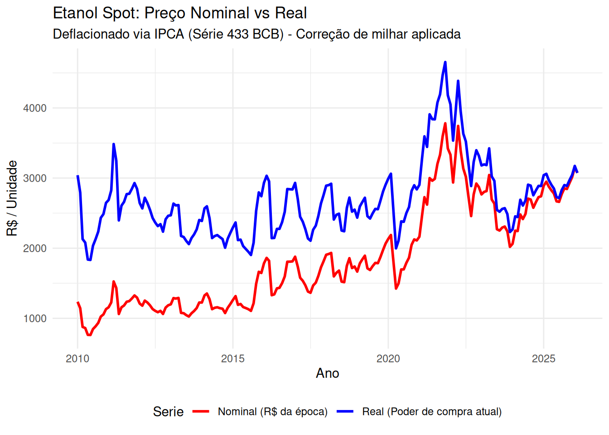
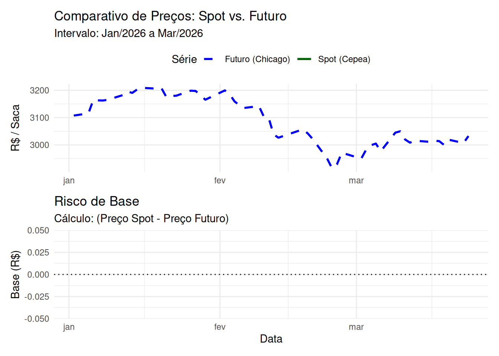

Linhas df_final: 194 NAs em preco_real: 0 Datas: 2010-01-01 a 2026-02-01 Análise da série histórica de preços do etanol, relatórios e previsões.
Série de preços spot (valor nominal e real) num intervalo mensal de Janeiro de 2010 à Fevereiro de 2026.

Linhas df_final: 194 NAs em preco_real: 0 Datas: 2010-01-01 a 2026-02-01 
Risco de base No segundo gráfico, os valores abaixo de 0 são os que preço futuro está maior que o preço spot, e os valores acima de 0 o oposto.
[1] "--- Resumo Estatístico do Risco de Base (Jan-Mar 2026) ---" Media Desvio_Padrao Minimo Maximo Amplitude N_Observacoes
1 NaN NA Inf -Inf -Inf 54O desvio padrão revela o quanto o preço spot e o futuro podem se diferenciar em média (no caso, R$ 3,54 para cima ou para baixo), já o gráfico do risco de base, que é a diferença do preço spot para o preço futuro, nos dá um insight serial histórico, incluindo os casos extremos (R$ -11,95 para baixo ou R$ 7,00 para cima).
A produção de etanol na safra 2025/26 enfrentou um cenário de estoques menores no Centro-Sul, o que sustentou preços firmes durante a entressafra (janeiro e fevereiro de 2026). No entanto, para a temporada 2026/27, projeta-se uma moagem de cana-de-açúcar em torno de 625 milhões de toneladas, sinalizando uma expansão na produção que pode superar o ritmo da demanda. O consumo seguiu aquecido no início de 2026, mas fevereiro registrou queda de 2,19% nos preços do hidratado (média de R$ 2,9732/litro) devido ao balanço de fim de safra de algumas unidades. Nas exportações, o setor mantém atenção à paridade com o açúcar no mercado internacional, que influencia a decisão de produção das usinas. Apesar do recuo mensal, os preços de fevereiro de 2026 ainda ficaram 7,35% acima do mesmo período de 2025 em termos reais.
As projeções indicam que a temporada 2026/27 terá poucos vetores de sustentação para os preços, com possibilidade de pressão baixista devido ao incremento da oferta global de biocombustíveis e açúcar. As importações não são expressivas frente à produção nacional, mas o estoque final da safra 2025/26 encerrou em patamares mais baixos, garantindo a firmeza dos preços antes da entrada da nova safra em abril. O cenário para 2026 é de cautela, com a oferta avançando em ritmo superior à demanda interna, exigindo que o setor exportador absorva o excedente para evitar quedas acentuadas nas cotações domésticas.
O Plano Safra foca principalmente na produção sustentável, e, apesar de facilitar crédito num aspecto geral, há uma atenção especial para granjas.
Aviso: O cruzamento resultou em poucas observações. Verifique as datas.Pela análise fundamentalista, se observa que se seguirá um aumento de preço pelos próximos meses, o que aparentemente já foi precificado pelo preço futuro. Ao analisar a série, se observa que a tendência também é de alta. Desse modo, não parece tão vantajoso fazer hedge enquanto produtor. Já para o processador é prudente fazer hegde para se proteger da alta.